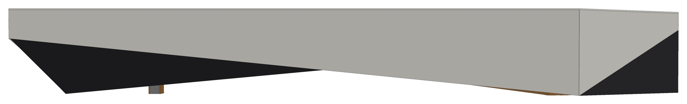
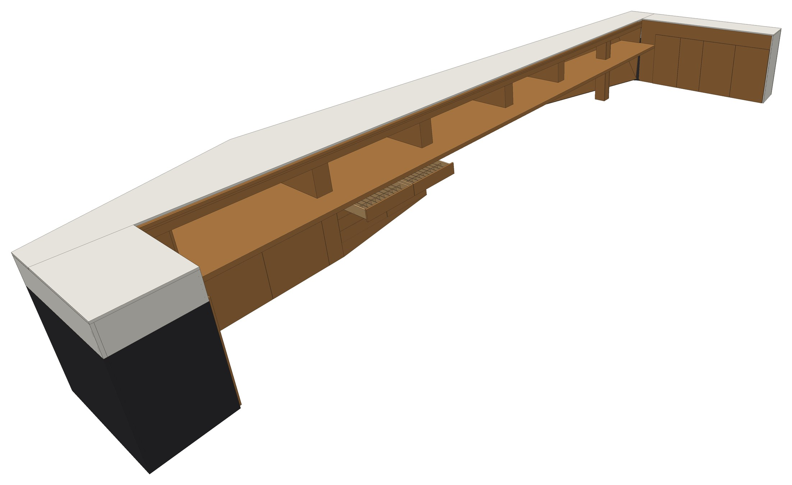
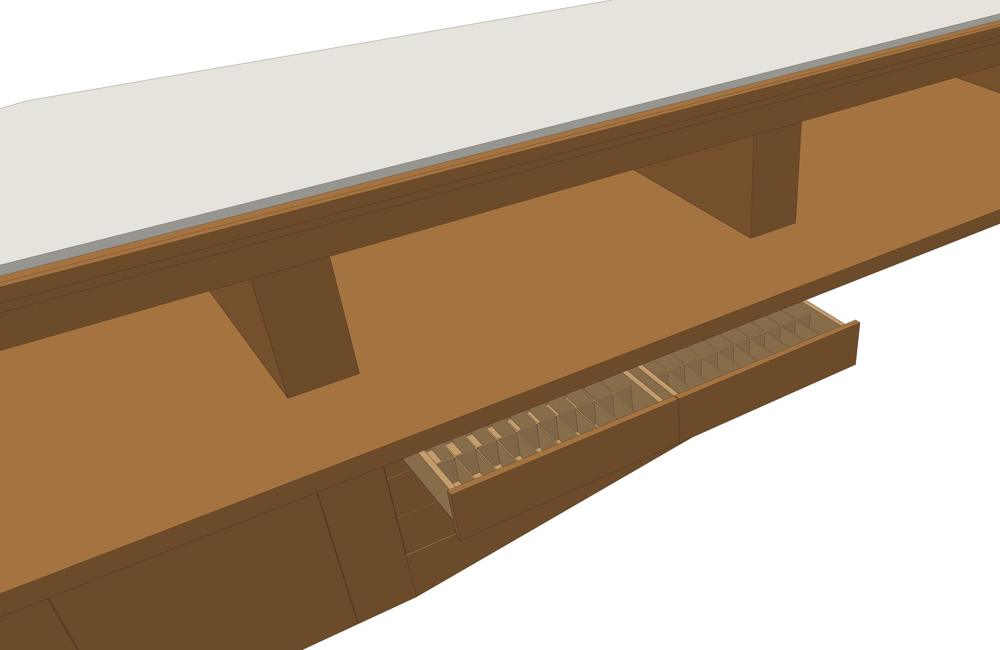
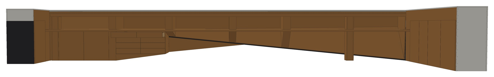
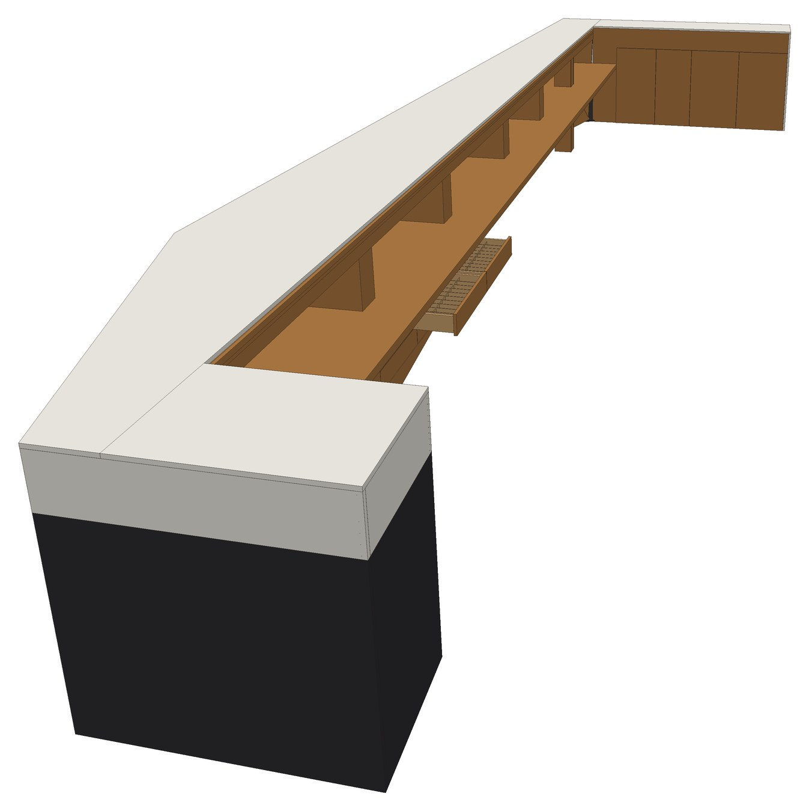
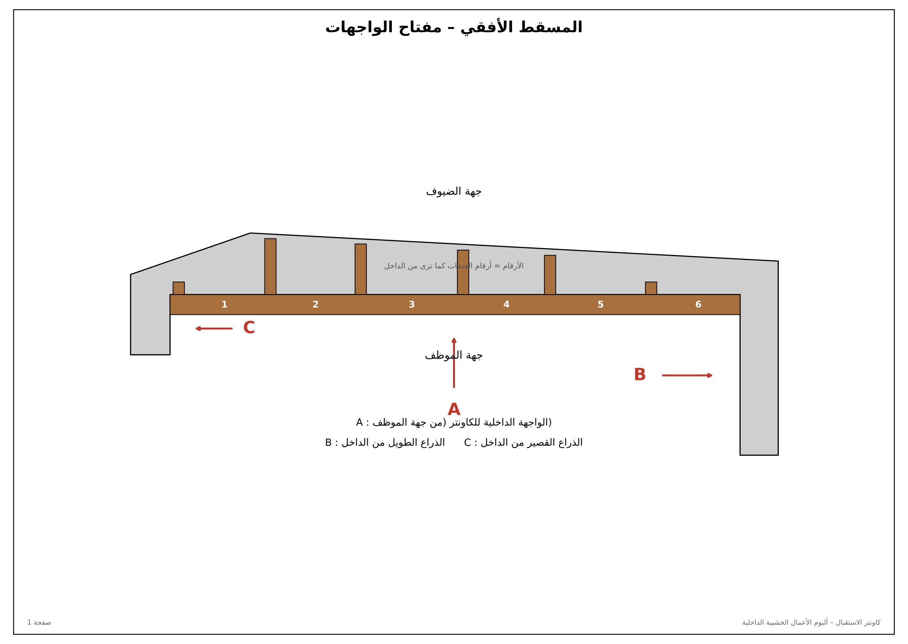
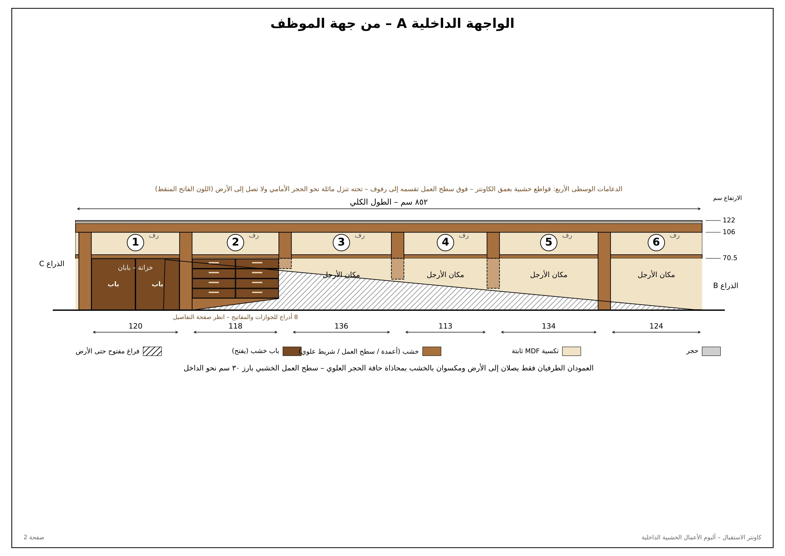
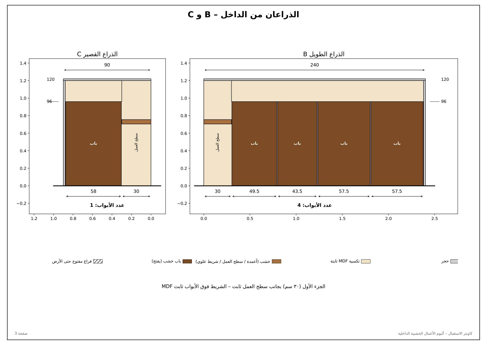
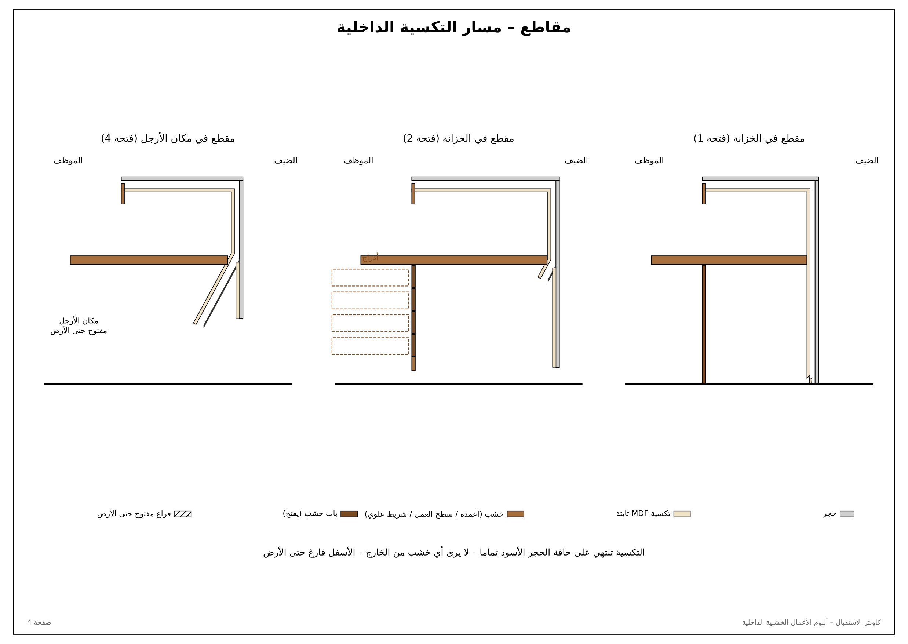
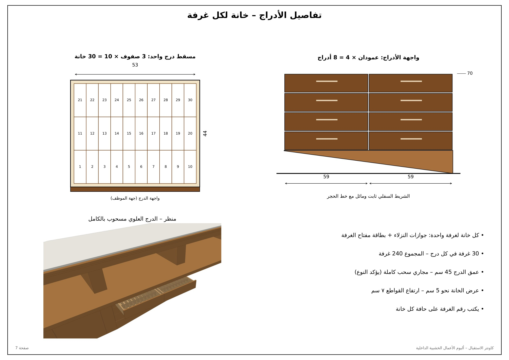

النموذج ثلاثي الأبعاد
إصبع واحد للتدوير – إصبعان للتكبير والتحريك
أهم النقاط
حجرتكسية MDF ثابتةخشبباب خشب
- من الخارج لا يُرى إلا الحجر، وأسفل الكاونتر فارغ حتى الأرض – لا يظهر أي خشب من الأسفل.
- من الداخل كل شيء خشب: أسفل الحجر العلوي، خلف الحجر، الأعمدة، سطح العمل، الخزائن، وجدران الذراعين.
- الفتحة 1 (من الداخل): خزانة ببابين. الفتحة 2: 8 أدراج (عمودان × 4) وأسفلها شريط ثابت مائل مع خط الحجر. الفتحات 3 إلى 6: مكان للأرجل وأرضيتها هي الأرض نفسها.
- الأدراج: داخل كل درج قواطع، كل خانة لغرفة واحدة (جوازات النزلاء + بطاقة المفتاح) – 30 غرفة في كل درج، المجموع 240 غرفة – عمق الدرج 45 سم.
- عرض كل عمود 17 سم بعد الكسوة. العمودان الطرفيان والقاطع بين الخزانتين يصلون إلى الأرض. القواطع الوسطى تقسّم سطح العمل إلى رفوف وتنزل مائلة نحو الحجر الأمامي.
- سطح العمل الخشبي بارز 30 سم نحو الداخل وملتصق من الخلف بالتكسية.
- الذراع الطويل B: 4 أبواب – الذراع القصير C: باب واحد.
- الأجزاء المائلة تُؤخذ بقالب من الموقع بعد تركيب الحجر.
صور ثلاثية الأبعاد





المخططات





اضغط على أي صورة لفتحها بالحجم الكامل ثم كبّرها بإصبعين.